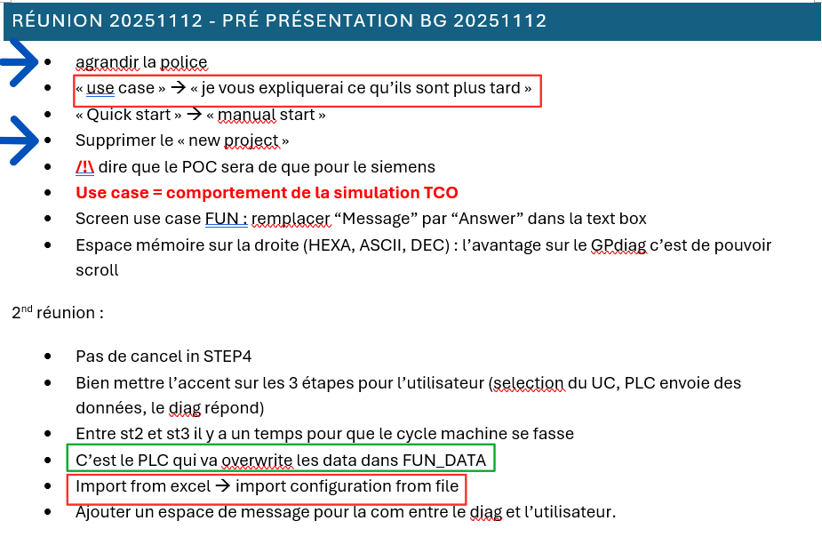

Intégration en Entreprise et Communication
Cette section montre comment je travaille dans une équipe professionnelle et comment je communique avec les différents membres de l'entreprise.
Sous-page : Réunions, Recueil de Besoins et Retours Utilisateurs
- Recueillir et analyser les retours utilisateurs
- Adapter son vocabulaire technique à son auditoire
- Traduire un besoin métier en spécification technique

1. Descriptif général de la trace et contexte
La trace n°4 est un extrait d'un fichier partagé que l'on utilise dans mon entreprise pour écrire les comptes-rendus de réunions. Ce n'est pas une simple prise de notes personnelle, mais un document collaboratif qui regroupe les questions, les retours et les décisions prises quand je présentais mon avancement au groupe métier (le BG).
Dans mon alternance, ce document est important car il montre comment mon travail technique s'intègre dans l'entreprise. Il prouve qu'une démonstration de code débouche sur un plan d'action concret partagé par toute l'équipe, pour être sûr que le logiciel répond bien aux besoins du terrain.
2. Analyse détaillée des savoir-faire mis en œuvre
Pendant ces réunions, j'ai pu apprendre à recueillir et analyser les retours utilisateurs. Les flèches bleues sur la trace n°4 indiquent des remarques sur l'interface et l'expérience utilisateur (UX/UI). Nous avons noté des demandes simples mais importantes pour le confort des opérateurs, comme le fait d'« agrandir la police » ou de « supprimer le projet new project ». Prendre en compte ces retours permet d'être sûr que l'outil sera bien accepté.
Lors des présentations, j'ai aussi dû adapter mon vocabulaire technique à mon auditoire, car les personnes présentes n'étaient pas des développeurs. Les encadrés rouges de la trace n°4 montrent cet effort pour parler plus simplement. Par exemple, j'ai mis de côté le mot très technique de « use case » pour l'instant (« je vous expliquerai ce qu'ils sont plus tard ») pour ne pas perdre les gens. De même, la fonction d'import a été renommée pour correspondre à leurs habitudes (« Import from excel » est devenu « import configuration from file »).
Enfin, en tant qu'informaticien, je dois savoir traduire un besoin métier en spécification technique. L'encadré vert sur la trace n°4 en est un bon exemple. Pendant la deuxième réunion (2nd réunion), un point sur le comportement du système a été clarifié et écrit directement sous forme de consigne technique : « C'est le PLC qui va overwrite les data dans FUN_DATA ». Cela transforme une discussion orale en une règle de développement claire pour mon code.
3. Auto-évaluation et bilan personnel
Contexte d'apprentissage et maîtrise : Travailler sur un document collaboratif partagé et échanger avec des équipes métiers est un exercice que j'ai découvert cette année en entreprise. On nous apprend à travailler en équipe à l'école, mais j'ai trouvé mon expérience en entreprise très différente des exercices que j'ai pu faire par le passé.
Difficultés rencontrées : Le fait de devoir traduire du jargon technique ou comprendre des besoins exprimés sans termes informatiques m'a demandé de m'adapter parfois en direct et d'apprendre à traduire des besoins fonctionnels en solutions techniques.
Évolution de mon niveau d'expertise : Par rapport au début de mon alternance, ma manière de communiquer en entreprise a évolué car j'ai commencé à intégrer les notions d'échanges et de sauvegarde de traces que demande ce milieu. Je pense être aujourd'hui à un niveau moyen puisque je pense avoir su adapter mes compétences en communication au milieu de l'entreprise. Mais je sais que je n'ai pas encore tous les bons réflexes de prise de notes, de documentation et de partage.